Beyond MVC: Functional Core / Imperative Shell
A talk by someone who went down a very deep rabbit hole — and built a framework at the bottom of it.
-
"Hi, I’m Thijs. I write Clojure for fun, which should tell you everything you need to know about my weekends."
-
"I spent the last couple of years building a framework called Boundary. Not because the ecosystem needed another framework, but because I wanted to really understand this architectural pattern — and the best way to understand something is to build it."
-
"Today I want to share what I learned. And I promise it’s relevant to your Python and Ruby code, not just mine."
-
Tone: curious colleague, not evangelist. "Here’s something cool I found."
Why I Built Boundary
I had a simple question:
What would a web framework look like if architectural rules were enforced by the language instead of by code review?
So I built one.
13 independently publishable libraries.
One opinionated pattern running through all of them.
Many, many late nights.
The pattern is called Functional Core / Imperative Shell.
And it changed how I think about every codebase — including Django and Rails ones.
-
"I wasn’t trying to replace Django or Rails. I was trying to answer an architectural question."
-
"The question turned out to have a really elegant answer — and that answer is what I want to show you today."
-
"Spoiler: you don’t need Clojure, or Boundary, to apply any of this. I’ll prove it."
What We’ll Cover
-
The problem with how we normally write code — and why it’s not really our fault
-
The one insight that changes everything
-
Hexagonal architecture: ports, adapters, and why the name is so terrible
-
Boundary: 13 modules, one pattern, infinite swap-ability
-
Five "aha" moments with real code
-
Is this worth the hassle? (Honest answer: sometimes yes, sometimes no)
-
"We’ll look at real Django and Rails code. I’ll try not to make it feel like an intervention."
-
"There will be Clojure. I’ll keep the syntax shock to a minimum."
Part 1: The Pain
You know this one. You’ve lived it.
The Fat Model: A Love Story
It starts so innocently.
# models.py, Year 1 — clean, sensible
class User(AbstractBaseUser):
email = models.EmailField(unique=True)
password = models.CharField(max_length=128)# models.py, Year 3 — "it made sense at the time"
class User(AbstractBaseUser):
def register(self, email, password, plan="free"):
if not self._is_allowed_domain(email): # business rule
raise ValidationError("Domain not allowed")
self.password = make_password(password) # hashing (I/O)
if User.objects.filter(email=email).exists(): # database query
raise ValidationError("Already registered")
send_mail("Welcome!", "...", FROM, [email]) # email (network I/O)
stripe.Customer.create(email=email) # billing (external API)
self.save() # persistence (I/O)-
"Year 1 is always beautiful. Year 3 is when the interviews happen."
-
"Nobody decided to put Stripe in the model. It just… ended up there. Gravity."
-
Ask the audience: "Who has a model that does more than 3 of these things? Keep your hand up. … Yeah."
Rails Callbacks: Magic with Consequences
# app/models/user.rb
class User < ApplicationRecord
before_create :hash_password
after_create :send_welcome_email # fires... sometimes. in a transaction. maybe.
after_create :charge_stripe # because what could go wrong
after_commit :invalidate_cache # on which connection? great question.
def register!(email, password, plan: :free)
raise "Domain not allowed" unless allowed_domain?(email)
raise "Already taken" if User.exists?(email: email)
self.email = email
self.plan = plan
save!
end
end
after_create— perfect for side effects you want to happen almost always, except in tests, and possibly in production on Tuesdays.
-
"I love Rails. ActiveRecord is a masterpiece… for the first 18 months of a project."
-
"Callbacks are the place where logic goes to become invisible. You call
save!and you no longer know what happens." -
"VCR cassettes,
ActionMailer::Base.deliveries, let(:stripe_mock) — the test suite starts looking like a stage production."
Spring Boot — Same Story, Enterprise Edition
Spring Boot has dependency injection and a service layer. Problem solved, right?
Not quite.
// UserService.java — a perfectly normal Spring service
@Service
@Transactional
public class UserService {
@Autowired private UserRepository userRepository; // JPA — database
@Autowired private PasswordEncoder passwordEncoder; // bcrypt — CPU I/O
@Autowired private JavaMailSender mailSender; // SMTP — network I/O
@Autowired private StripeClient stripeClient; // REST — external API
public User register(RegisterRequest req) {
// Business rule + database call in the same breath
if (userRepository.existsByEmail(req.email()))
throw new EmailAlreadyExistsException();
if (!isAllowedDomain(req.email())) // pure business rule
throw new DomainNotAllowedException(); // stuck in the same class
String hash = passwordEncoder.encode(req.password()); // I/O
User user = userRepository.save( // I/O
new User(req.email(), hash));
sendWelcomeEmail(user); // I/O
stripeClient.createCustomer(user.getEmail()); // I/O
return user;
}
}DI is great. But UserService still knows business rules AND does I/O — in the same class.
-
"Spring devs will say: 'but we have interfaces and DI!' Yes — and that’s closer than ActiveRecord. But the service is still mixing logic and I/O."
-
"The
isAllowedDomainrule lives in the same class asstripeClient.createCustomer. They have nothing to do with each other." -
"`@Transactional` is a hidden side effect. You call
register()and a transaction opens — invisibly." -
"The service orchestrates and decides in one breath. FC/IS says those should be different namespaces."
The Testing Tax — All Three Stacks
To test one business rule — "is this email domain allowed?" — you need:
@patch("myapp.models.stripe.Customer.create") # don't actually charge anyone
@patch("myapp.models.send_mail") # don't actually email anyone
@patch("myapp.models.make_password", return_value="hashed")
@pytest.mark.django_db
def test_domain_not_allowed(mock_hash, mock_mail, mock_stripe):
user = User()
with pytest.raises(ValidationError):
user.register("alice@competitor.com", "s3cr3t")
mock_stripe.assert_not_called()
mock_mail.assert_not_called()@ExtendWith(MockitoExtension.class) // at least no full Spring context...
class UserServiceTest {
@Mock UserRepository userRepository; // four mocks
@Mock PasswordEncoder passwordEncoder;
@Mock JavaMailSender mailSender;
@Mock StripeClient stripeClient;
@InjectMocks UserService userService;
@Test void rejectsDomainNotAllowed() {
when(passwordEncoder.encode(any())).thenReturn("hashed");
when(userRepository.existsByEmail(any())).thenReturn(false);
assertThrows(DomainNotAllowedException.class, () ->
userService.register(new RegisterRequest("alice@rival.com", "s3cr3t")));
verify(stripeClient, never()).createCustomer(any()); // paranoia
verify(mailSender, never()).send(any()); // more paranoia
}
}Four mocks in both cases — just to test a domain check that has nothing to do with Stripe or email.
-
"The Spring version doesn’t need
@SpringBootTestif you use@ExtendWith(MockitoExtension.class)— fair point. But four Mockito mocks to test a string check is still the wrong abstraction." -
"Every time the service gains a new dependency, every test in this class needs updating."
-
"The mocks are testing that you remembered to not call Stripe — not the business rule itself."
-
"The architecture created this testing burden. The architecture can fix it too."
Why Does This Keep Happening?
Because the framework has one obvious place to put things:

The model is a magnet. Everything lands there because there’s nowhere else with a clear mandate.
-
"MVC gives you three buckets: Model, View, Controller. Business logic belongs in the Model. External services… also in the Model, I guess? Caching? Model. Background jobs? Model."
-
"The framework is not wrong. It just doesn’t draw any lines within the Model."
-
"And once a codebase gets big enough, the absence of internal lines is the problem."
Part 2: The One Insight
Knowing vs. Doing
Look at that register() method again. It does two completely different kinds of things:
| 🧠 Knowing (pure logic) | 🔌 Doing (side effects) |
|---|---|
Is this email domain allowed? |
Query the database for existing users |
Is the password strong enough? |
Hash the password (bcrypt — slow by design) |
Should this account be locked out? |
Write the lock record to the database |
How long should this session last? |
Generate a cryptographic token |
Is this login suspiciously risky? |
Send a security alert email |
-
"Here’s the aha moment I want you to have: the left column is math. It’s just logic."
-
"You can test every item in the left column by passing in some data maps and checking the result."
-
"The right column is where the world gets involved. That’s where things get expensive and slow."
-
"FC/IS says: let’s not mix these two columns in the same function."
The Wall
The shell orchestrates. The core thinks. Never the other way around.
-
"The shell is a script. It fetches data, passes it to the core, gets a decision back, then acts on it."
-
"The core is a library of pure functions. Give it data, it gives you answers. No side effects."
-
"This one rule — core never calls shell — is what makes everything else possible."
Two Rules, That’s It
| ✅ Functional Core | ✅ Imperative Shell |
|---|---|
Pure functions only |
All side effects live here — and only here |
| Shell → Core is allowed. Core → Shell is never allowed. |
That’s the whole pattern.
Seriously. That’s it. The rest is implementation.
-
"I know it sounds too simple. But the implications are enormous."
-
"In Boundary, this rule is enforced by the linter. A compile-time check. If a
core/namespace requires anything fromshell/, the build fails." -
"In Python and Ruby, you enforce it with code review and discipline. Less reliable, but still effective."
Part 3: Hexagonal Architecture
Yes, the name is terrible. The idea is brilliant.
What Hexagonal Adds
FC/IS tells you where logic lives. Hexagonal Architecture (Alistair Cockburn, 2005) tells you how the shell connects to the outside world.
The key idea: all connections to external systems go through ports.
-
A port is an interface (a contract, a protocol, an ABC — whatever your language calls it)
-
An adapter is a concrete implementation of that port
-
The domain knows only the port. It never imports an adapter.

-
"The test suite is a driving adapter. It drives the domain through the same interface as HTTP."
-
"That’s the key insight: tests and production code use the same door."
-
"And because the output ports are just interfaces, you can wire up H2 for tests and PostgreSQL in production. No code changes."
A Port in Boundary
;; libs/user/src/boundary/user/ports.clj
(defprotocol IUserRepository
"Output port — the domain's view of 'something that stores users'.
It doesn't know if that's PostgreSQL, H2, or a map in memory."
(find-user-by-id [this user-id])
(find-user-by-email [this email])
(create-user [this user-data])
(update-user [this user-data])
(soft-delete-user [this user-id])
(find-users [this options]))Compare: in Django your model is the ORM. In Rails you inherit from ActiveRecord::Base.
Both couple your business logic to a specific database library at the class definition level.
A port says: "I need something that can find and store users. I don’t care what it is."
-
"In Python you’d use
typing.Protocolorabc.ABC. In Ruby, duck typing + documentation — less explicit but workable." -
"The critical difference: with a port, you can replace the implementation without touching any business logic."
-
"With Django ORM, you can mock it. That’s different from replacing it."
Part 4: Boundary — Built on Modularity
13 libraries. One pattern. Each independently deployable.
The 13 Libraries
Boundary is not a monolith. It’s 13 independently publishable libraries, each doing one thing:
| Category | Library | What it does |
|---|---|---|
Foundation |
|
Validation, case conversion, interceptor pipeline, feature flags |
|
HTTP routing (Reitit), DB adapters (PostgreSQL / MySQL / SQLite / H2), migrations, multi-DB support |
|
|
Request logging, structured metrics, distributed tracing interceptors |
|
Domain |
|
Authentication, sessions, MFA, password policy, audit trail |
|
HTMX-powered back-office UI, entity config, table/form generation |
|
|
Multi-tenancy (schema-per-tenant), tenant resolution middleware |
|
Infrastructure |
|
Redis + in-memory adapters, TTL management, atomic operations |
|
Background job processing, retry logic, dead-letter queues |
|
|
SMTP sending, async queue mode, in-memory adapter for tests |
|
|
Local filesystem + AWS S3 adapters, image resizing, presigned URLs |
|
|
WebSocket connections, pub/sub messaging, SSE support |
|
Tooling |
|
Generates a new FC/IS module with correct directory structure in one command |
External services |
|
Adapters for SMTP, IMAP, Stripe payments & webhooks, and Twilio SMS/WhatsApp — each behind its own port |
-
"Each library has its own
build.clj, its own tests, its own version. You can publish justboundary/userto Clojars." -
"You don’t have to use all 13. Pick what you need. The pattern keeps them consistent."
-
"The scaffolder generates a new library with the correct FC/IS structure in one command."
Every Library Looks the Same Inside
libs/{any-library}/src/boundary/{library}/
├── core/ ← pure functions. period. end of story.
│ ├── domain.clj
│ └── validation.clj
├── shell/ ← side effects, I/O, orchestration
│ ├── service.clj
│ ├── persistence.clj
│ └── web_handlers.clj
├── ports.clj ← interface definitions
└── schema.clj ← data shapes (Malli)Consistency is a feature.
Open any library. You already know where to look for the business rules.
You already know where the database code lives.
No spelunking.
-
"This is what I mean by 'enforced by structure.' The pattern is the directory layout."
-
"New developer joins the team. They learn the pattern once. They understand every module."
-
"Contrast with a Django project where each app has its own conventions about where logic lives."
Modules Compose Cleanly
Because each module exposes a port (interface), they can be wired together without tight coupling.
The user service only knows about interfaces — it has no idea what sits behind them:

The user module knows about IEmailService. It has no idea whether that’s SMTP or SES.
-
"This is loose coupling in practice. Not as a principle. As an actual structural outcome."
-
"Want to switch from SMTP to AWS SES? Change one line in the config. Zero application code changes."
-
"This is not dependency injection as a testing hack. It’s dependency injection as a real architectural tool."
Part 5: Pluggability — Swap Anything
If it implements the port, it works.
The Database Is Just an Adapter
Boundary ships adapters for four databases — all implementing the same port:
;; Four adapters. One port. Zero business logic changes when you switch.
;; PostgreSQL / H2 / MySQL / SQLite adapter — same code, different driver
(defrecord SQLUserRepository [ctx] ; ctx carries db connection + dialect
IUserRepository
(find-user-by-email [_ email]
(db/execute-one! ctx ; next.jdbc under the hood
{:select [:id :email :password-hash :active :role]
:from [:auth-users]
:where [:= :email email]}))) ; HoneySQL map — parameterised, no string concat
;; In-memory adapter — ultra-fast unit tests, zero I/O
(defrecord InMemoryUserRepository [store]
IUserRepository
(find-user-by-email [_ email]
(first (filter #(= email (:email %)) (vals @store)))))The HoneySQL query map compiles to a parameterised prepared statement — [:= :email email] never does string concatenation.
-
"In Django, your model is the ORM. If you want to test without a database, you mock the ORM. That’s shimming."
-
"In Boundary, the database is a plug. You pull out one plug and insert another. No shimming needed."
-
"The HoneySQL map avoids raw SQL strings entirely — no SQL injection surface, and the same map works across all four database dialects."
-
"The in-memory adapter makes unit tests for shell services trivial — no Docker, no migrations."
Wiring Is Just Configuration
;; resources/conf/prod/config.edn — production
{:user/repository {:type :postgresql :db #ig/ref :db/connection}
:email/service {:type :smtp :host "mail.example.com"}
:cache/service {:type :redis :url "redis://cache:6379"}
:user/service {:repository #ig/ref :user/repository
:email #ig/ref :email/service
:cache #ig/ref :cache/service}}
;; resources/conf/test/config.edn — tests
{:user/repository {:type :h2 :db #ig/ref :db/test-connection}
:email/service {:type :in-memory}
:cache/service {:type :in-memory}
:user/service {:repository #ig/ref :user/repository
:email #ig/ref :email/service
:cache #ig/ref :cache/service}}The business logic in :user/service is identical in both configs.
The only thing that changes is what gets plugged in.
-
"Integrant wires the system at startup from config. It’s like Django’s settings.py but for component wiring."
-
"In Django, switching from SMTP to SES means hunting through
send_mailcalls. Here it’s one word in a config file." -
"The test config uses in-memory everything. Tests run in milliseconds. No Docker daemon required."
What You Can Swap Without Touching Business Logic
| Capability | Available adapters | What you change |
|---|---|---|
Database |
PostgreSQL, MySQL, SQLite, H2 |
One line in config |
SMTP, async queue, in-memory (tests) |
One line in config |
|
Cache |
Redis, in-memory (tests) |
One line in config |
Storage |
Local filesystem, AWS S3 |
One line in config |
Background jobs |
Worker process, inline (tests) |
One line in config |
Delivery channel |
HTTP, CLI, test runner |
Different entry point |
-
"This is not theoretical. I use H2 in all tests. Switching from H2 to PostgreSQL is one word:
:type :postgresql." -
"Every adapter is validated against a contract test suite — same tests, different plug."
-
"The same user registration code runs from HTTP, CLI, and tests. No duplication."
Part 6: Real Code, Side by Side
User Registration: Django
# views.py — a perfectly normal Django view that does too much
def register(request):
form = RegisterForm(request.POST)
if not form.is_valid():
return render(request, "register.html", {"form": form})
email = form.cleaned_data["email"]
password = form.cleaned_data["password"]
# Business rule... in the view... because where else?
if User.objects.filter(email=email).exists():
form.add_error("email", "Already taken")
return render(request, "register.html", {"form": form})
user = User.objects.create_user(email=email, password=password)
send_welcome_email.delay(user.pk) # fire and hope
stripe.Customer.create(email=email) # also fire and hope
return redirect("dashboard")Questions you can’t answer by reading this:
-
If
send_welcome_emailfails, does the user still get created? -
Where is the "domain not allowed" check? In the form? The model? Both?
-
How do you test this without Stripe, Celery, and a test database?
-
"This is not bad code. This is totally normal, pragmatic Django. The problem is structural."
-
"The 'email already taken' check is a business rule. It lives in the view because that’s the path of least resistance."
-
"Run this test: you need
@pytest.mark.django_db, mock Stripe, mock Celery, mock the email backend."
User Registration: Boundary Core (Pure Logic)
;; libs/user/src/boundary/user/core/user.clj
;; This file has zero imports from any I/O library. None. Ever.
(defn check-duplicate-user-decision
"Is registration allowed for this email?
The shell queries the database and passes the result in.
This function never touches a database — it just makes a decision."
[user-data existing-user]
(if existing-user
{:decision :reject
:reason :duplicate-email
:email (:email user-data)}
{:decision :proceed}))
(defn prepare-user-for-creation
"Build the complete user record ready for persistence.
The shell provides current-time and user-id.
This function never calls the clock or a UUID generator."
[user-data current-time user-id]
(merge user-data
{:id user-id
:created-at current-time
:active true
:login-count 0
:failed-login-count 0}))Test for check-duplicate-user-decision: one line. No mocks. No database. Runs in 0.1ms.
-
"No ORM import. No database client. No network. Just a function that takes data and returns data."
-
"`current-time` and
user-idcome from the shell. The core doesn’t know what time it is — and that’s intentional." -
"This function is completely honest about what it needs. No hidden dependencies."
User Registration: Boundary Shell (Orchestration)
;; libs/user/src/boundary/user/shell/service.clj — simplified
;; The shell is a script: fetch → decide → act → repeat.
(defn register-user! [repositories user-data]
(let [{:keys [user-repo audit-repo]} repositories]
;; Step 1: CORE — pure validation, no I/O
(let [result (user-core/validate-user-creation-request user-data config)]
(when-not (:valid? result)
(throw (ex-info "Invalid data" {:errors (:errors result)}))))
;; Step 2: SHELL fetches, CORE decides — logic stays pure
(let [existing (user-repo/find-user-by-email user-repo (:email user-data))
decision (user-core/check-duplicate-user-decision user-data existing)]
(when (= :reject (:decision decision))
(throw (ex-info "User exists" {}))))
;; Step 3: SHELL does the expensive I/O, passes results to CORE
(let [hash (auth-shell/hash-password (:password user-data)) ;; bcrypt here
now (current-timestamp) ;; shell owns the clock
id (generate-user-id) ;; shell owns randomness
prepared (user-core/prepare-user-for-creation
(assoc user-data :password-hash hash) now id)
;; Step 4: SHELL persists
created (user-repo/create-user user-repo prepared)]
(dissoc created :password-hash)))) ;; never leak the hash-
"The shell is almost boring. It’s a recipe: get some ingredients, call a core function, store the result."
-
"All the interesting logic is in the core. The shell just orchestrates."
-
"Notice:
current-timestampandgenerate-user-idare defined in the shell. The core gets the result, not the function."
Part 7: Five Aha Moments
The moments that made this worth all the late nights.
Aha #1 — Your Tests Stop Lying to You
;; libs/user/test/boundary/user/core/authentication_test.clj
(def active-user {:id "uuid-1" :email "alice@example.com"
:active true :role :user
:deleted-at nil :failed-login-count 0})
(deftest login-attempt-policy
(testing "blocks deleted accounts"
(let [result (auth/should-allow-login-attempt?
(assoc active-user :deleted-at some-past-time)
config now)]
(is (false? (:allowed? result)))))
(testing "blocks locked accounts"
(let [result (auth/should-allow-login-attempt?
(assoc active-user :lockout-until some-future-time)
config now)]
(is (false? (:allowed? result)))))
(testing "allows normal active accounts"
(is (true? (:allowed? (auth/should-allow-login-attempt? active-user config now))))))No @pytest.mark.django_db. No @patch. No factory. No fixtures. No container.
Just data in, data out. Runs in under 5 milliseconds.
-
"The whole
core/authenticationtest suite runs in about 10ms. All of it." -
"When tests are this fast and simple, developers actually run them. Constantly. On every save."
-
"And they test the real business rules, not the mock of the mock of the database client."
Aha #2 — Time Is Just a Parameter
# Django — time is a hidden global
def is_session_valid(session):
return session.expires_at > datetime.now() # ← where does "now" come from?;; libs/user/src/boundary/user/core/session.clj
(defn is-session-valid?
"current-time is injected by the shell. The core never reads the clock."
[session current-time]
(cond
(nil? session) {:valid? false :reason "Not found"}
(.isAfter current-time (:expires-at session)) {:valid? false :reason "Expired"}
:else {:valid? true}));; Test — you control time. No freezegun. No Timecop. No monkey-patching.
(deftest session-expiry
(let [expired {:expires-at (Instant/parse "2020-01-01T00:00:00Z")}
now (Instant/parse "2026-01-01T00:00:00Z")]
(is (false? (:valid? (session/is-session-valid? expired now))))))The same trick works for UUIDs, random tokens, external API responses — anything the "real world" provides.
-
"No
freezegun. NoTimecop. Nomock.patch('datetime.datetime.now')." -
"Making time explicit sounds annoying. In practice it takes 10 seconds and saves hours of debugging flaky tests."
-
"Once you start doing this, you notice how many other hidden global dependencies your code has."
Aha #3 — Complex Domain Logic Becomes Readable
Here’s Boundary’s login risk scorer. Read it like a spec.
(defn analyze-login-risk
"Score the risk of a login attempt. No database, no HTTP, no Redis — just data."
[user login-context recent-sessions now]
(let [risk-factors
(cond-> []
;; Logging in from a new IP address? Suspicious.
(not-any? #(= (:ip-address login-context) (:ip-address %)) recent-sessions)
(conj {:factor :new-ip-address :weight 30})
;; Admin account? Higher bar.
(= :admin (:role user))
(conj {:factor :admin-user :weight 25})
;; Account hasn't been used in 30 days? Wake-up suspicious.
(and (:last-login user)
(> (days-since (:last-login user) now) 30))
(conj {:factor :dormant-account :weight 40}))
score (reduce + (map :weight risk-factors))]
{:risk-score score
:risk-factors risk-factors
:requires-mfa? (> score 50)}))Test any scenario with a map and a timestamp. No Redis mock. No HTTP context. No session store.
-
"This is security-grade logic. You want to be able to read it, reason about it, verify it."
-
"When it’s a pure function, a product manager can point at the code and say 'that threshold should be 40 not 50.' And they can be right."
-
"Try doing this in a Django view without it getting tangled with the request object."
Aha #4 — One Business Logic, Three Entry Points
The same user-core functions power three completely different delivery channels:

No copy-paste. No "the CLI version does it slightly differently."
One set of business rules, delivered however you need.
-
"This is huge in practice. How many Django projects have a management command that subtly reimplements the logic from the view?"
-
"In Boundary, the CLI entry point and the HTTP handler both call the same shell service, which calls the same core."
-
"Add a new delivery channel — a GraphQL API, a gRPC endpoint — and you get the business logic for free."
Aha #5 — The Core Is Your Living Specification
;; Read this. You now know the complete password policy.
;; No Confluence page. No Jira ticket. No "ask Sarah, she wrote it."
(defn meets-password-policy? [password policy user-context]
(let [violations
(cond-> []
(< (count password) (:min-length policy 8))
(conj {:code :too-short :message "At least 8 characters"})
(and (:require-uppercase policy)
(not (re-find #"[A-Z]" password)))
(conj {:code :missing-uppercase :message "Need an uppercase letter"})
(and (:require-numbers policy)
(not (re-find #"\d" password)))
(conj {:code :missing-number :message "Need a number"})
;; Personal touch: can't use your own email username as a password
(and user-context
(str/includes? (str/lower-case password)
(str/lower-case (email-username (:email user-context)))))
(conj {:code :contains-email :message "Can't contain your email"}))]
{:valid? (empty? violations) :violations violations}))A product manager can read this. A security auditor can verify it. A new team member can understand it — without needing the database running.
-
"No ORM mixin. No Rails concern. No callback chain. No 'it validates it somewhere, I think in the form?'"
-
"The rules are in one place, expressed as code, verifiable as tests."
-
"This is what 'the code is the documentation' actually looks like when it’s working."
Part 8: Is It Worth It?
The honest answer.
Where FC/IS + Hexagonal Really Pays Off
| Context | Why it helps |
|---|---|
Rich domain logic |
Rules are isolated, readable, testable. No infrastructure required to understand them. |
Multiple delivery channels |
HTTP, CLI, jobs — same core, no duplication. |
Infrastructure uncertainty |
Planning to switch databases? Cloud providers? The adapters absorb the change. |
Security-critical code |
Lock-out, rate limiting, risk scoring: pure functions are easy to audit and verify. |
Long-lived teams |
New developers learn the pattern once. Every module is navigable. |
Library/framework development |
The pattern is how Boundary itself is structured. Works beautifully for reusable code. |
-
"The ROI on this increases over time. Year 1 of a project, Django’s ergonomics win. Year 4, the architectural debt starts showing up."
-
"If you’re building something that will be maintained for 3+ years by different teams, this is worth the upfront investment."
Where It Costs You
| Cost | Reality check |
|---|---|
More files, more layers |
Yes. Every feature touches at least |
No ORM shortcuts |
|
Django Admin is gone |
You can’t point Django Admin at a port. You lose that for free. |
Spring devs: DI is not enough |
Spring’s |
The pattern requires discipline |
In Python/Ruby/Java, nothing stops a junior dev from importing the ORM into |
Simple CRUD doesn’t need this |
A 10-model app with no real business logic? Django admin + DRF, or Spring Boot + JPA. Don’t overthink it. |
-
"Be honest with your team. This is a trade. More structure now, less pain later."
-
"If your deadline is next week and you’re building a blog, use Django and go home on time."
-
"If you’re building the fourth iteration of a payments system that’s going to exist in 2030, think about this."
You Can Do This in Python Today
No Clojure required. Just a convention.
# core/authentication.py — NO Django imports. Zero.
from dataclasses import dataclass
from datetime import datetime
from typing import Optional
@dataclass(frozen=True)
class LoginDecision:
allowed: bool
reason: Optional[str] = None
def should_allow_login(user_data: dict,
config: dict,
now: datetime) -> LoginDecision:
if user_data is None:
return LoginDecision(allowed=False, reason="Not found")
if not user_data["active"]:
return LoginDecision(allowed=False, reason="Deactivated")
if user_data.get("lockout_until") and now < user_data["lockout_until"]:
return LoginDecision(allowed=False, reason="Locked")
return LoginDecision(allowed=True)# shell/user_service.py — Django-aware. Calls core. Does I/O.
from core.authentication import should_allow_login
from myapp.models import User
from datetime import datetime
def authenticate(email: str, password: str, now=None) -> dict:
now = now or datetime.now()
user = User.objects.filter(email=email).first()
return should_allow_login(user.__dict__ if user else None, config, now)-
"The rule:
core/never imports anything from Django or Rails. Code review enforces it." -
"Python’s
typing.Protocollets you define ports cleanly. Ruby does it with duck typing." -
"You won’t get the compile-time enforcement Clojure gives you, but you get most of the benefit."
You Can Do This in Java/Spring Today
// core/UserRegistrationCore.java — no @Service, no @Autowired, nothing
public final class UserRegistrationCore {
// Immutable result type — records make this clean in Java 16+
public record RegistrationDecision(boolean allowed, String reason) {
public static RegistrationDecision proceed() {
return new RegistrationDecision(true, null);
}
public static RegistrationDecision reject(String reason) {
return new RegistrationDecision(false, reason);
}
}
// Pure function: did the shell find an existing user? What should happen?
public static RegistrationDecision checkDuplicate(String email, boolean alreadyExists) {
if (alreadyExists) return RegistrationDecision.reject("Email already taken");
return RegistrationDecision.proceed();
}
// Pure function: build the complete user record — shell provides time and ID
public static UserRecord prepareForCreation(String email, String passwordHash,
UUID id, Instant createdAt) {
return new UserRecord(id, email, passwordHash, createdAt, true, 0);
}
}@Service
public class UserShellService {
private final UserRepository userRepository;
private final PasswordEncoder passwordEncoder;
public UserShellService(UserRepository repo, PasswordEncoder encoder) {
this.userRepository = repo;
this.passwordEncoder = encoder;
}
public User register(RegisterRequest req) {
// Step 1: shell queries DB, core makes the decision
boolean exists = userRepository.existsByEmail(req.email());
var decision = UserRegistrationCore.checkDuplicate(req.email(), exists);
if (!decision.allowed()) throw new EmailAlreadyExistsException(decision.reason());
// Step 2: shell does I/O, core prepares the record
String hash = passwordEncoder.encode(req.password());
var prepared = UserRegistrationCore.prepareForCreation(
req.email(), hash, UUID.randomUUID(), Instant.now());
// Step 3: shell persists
return userRepository.save(prepared.toEntity());
}
}class UserRegistrationCoreTest { // plain JUnit 5, no annotations
@Test void rejectsDuplicateEmail() {
var d = UserRegistrationCore.checkDuplicate("alice@example.com", true);
assertFalse(d.allowed());
assertEquals("Email already taken", d.reason());
}
@Test void allowsNewEmail() {
var d = UserRegistrationCore.checkDuplicate("alice@example.com", false);
assertTrue(d.allowed());
}
}
// Runs in ~5ms. No Spring context. No Mockito. No database. No Stripe.-
"Java devs: you already know this pattern. It’s basically a static utility class with proper return types."
-
"The
UserRepositoryinterface is the port. Spring Data JPA is the adapter. You already write it this way — the step is just making sure your business logic doesn’t leak into the service." -
"Records (Java 16+) make immutable result types almost as terse as Clojure maps."
-
"`Instant.now()` moves to the shell. Now you can pass any timestamp into
prepareForCreationin tests — noMockito.mockStatic."
Try It in One Module
Pick one thing in your current codebase. A model with real business logic. A service that does too much.
-
Create
core/that_thing.py/core/ThatThingCore.java/core/that_thing.rb. No framework imports allowed. None. -
Move every business rule in there as a plain function or static method.
-
Make the functions accept their dependencies as arguments — time, existing data, config.
-
Write tests against those functions with no mocks.
-
Build a thin service/shell on top that does the I/O and calls the pure functions.
That’s it. One module. See how it feels.
You don’t need Clojure. You don’t need Boundary.
You just need acore/folder and the discipline to keep it clean.
-
"I’m not trying to convert you to Clojure. I’m trying to give you one more architectural tool."
-
"The pattern works in any language. The enforcement varies. The clarity is always there."
-
"Happy to pair with anyone who wants to try it on their codebase."
Resources
-
Gary Bernhardt — "Boundaries" (destroyallsoftware.com, 2012)
The talk that started all of this. 35 minutes. Required viewing. -
Alistair Cockburn — "Hexagonal Architecture" (alistair.cockburn.us, 2005)
Where ports and adapters got their name. -
Mark Seemann — "Functional architecture: the pits of success" (NDC 2016)
Great bridge between FP ideas and practical architecture. -
Boundary framework — this repository
Everylibs//src//core/folder is a live example. -
Best starting point —
examples/ecommerce-api/
The most complete reference implementation.
-
"Gary Bernhardt’s talk is where I’d send anyone who wants to go deeper. Watch it before you try to apply the pattern."
-
"Alistair Cockburn coined 'Hexagonal' but the post is dense. Mark Seemann’s talk is more accessible."
Questions?
🧠 Core = knowing |
🐚 Shell = doing |
🔌 Port = contract |
The most radical thing you can do is separate what your code knows from what it does.
— And then put a wall between them.
-
"I expect pushback. 'Our models aren’t that bad.' Fair — until they are."
-
"Good challenge question: 'How do you handle transactions that span multiple operations?' Answer: the shell owns transaction boundaries, the core never sees them."
-
"Another one: 'What about Django signals?' Signals are callbacks by another name — they break the wall. In FC/IS you make those effects explicit in the shell."
-
"Leave 15+ min for Q&A. This audience will have strong opinions. That’s good."